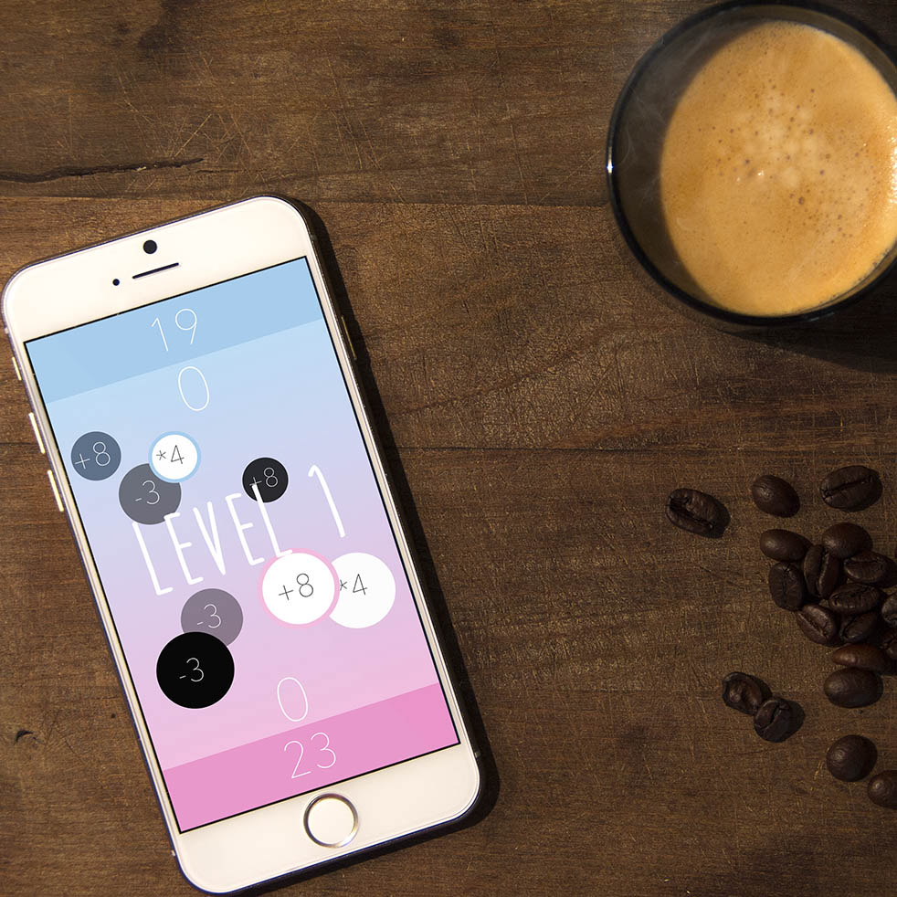
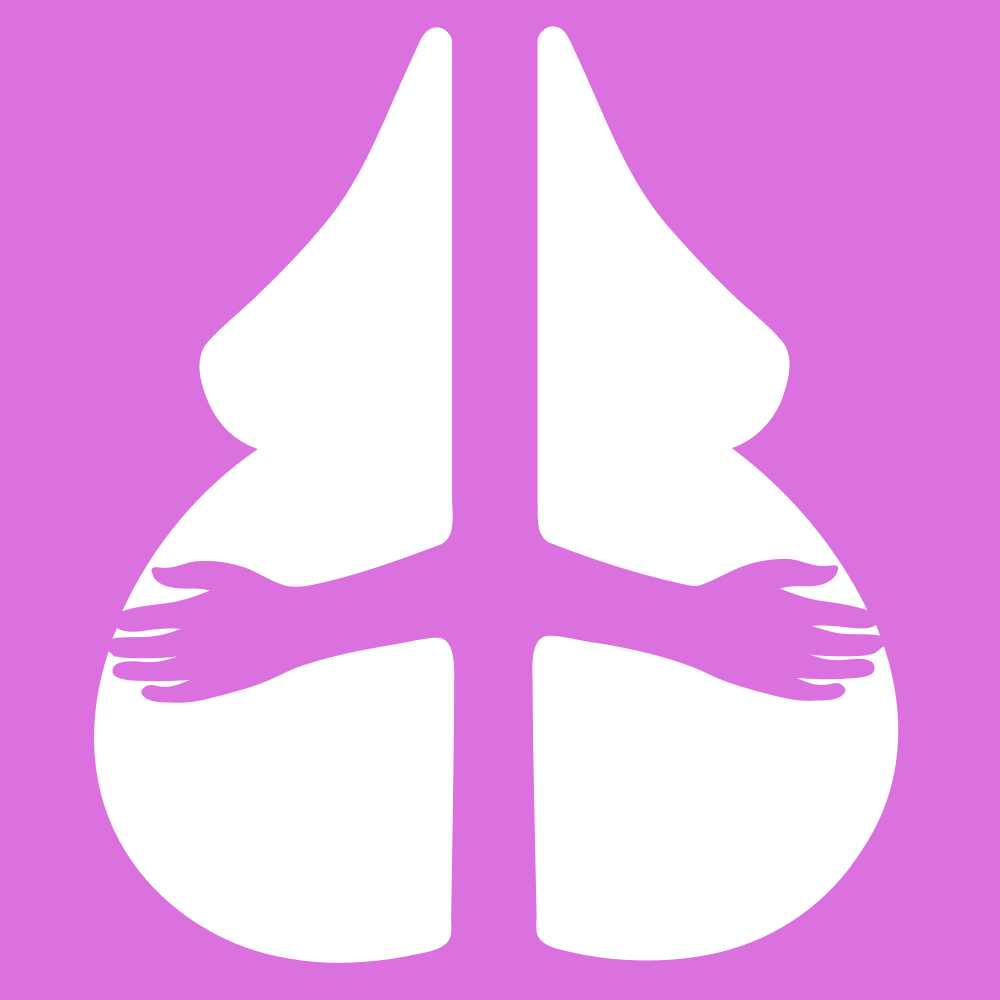

The Archive
User Experience Design
Plus+
April 2016
Refer Me is a platform that facilitates referrals by connecting current employees to job seekers. I did the design, worked with two developers and two product managers.
SF Voice
March 2016
In this one day hackathon, I worked with two other designers, and two other developers to create SF Voice. It's Reddit meets Tindr for political activism & engagement.
Health Journal
November 2015
Created a lightweight mobile app to quickly and easily log food, weight, and activity to track calories and lose weight.
Web Development
Boom Boom Womb
Branded & prototyped a website for a student project to bring a 30 year old toy store into the modern age.
Webstir.org
Branded & prototyped a website for a student project to bring a 30 year old toy store into the modern age.
Rethinking Transportation

Rethinking the DMV
Branded & prototyped a website for a student project to bring a 30 year old toy store into the modern age.

City CarShare
Branded & prototyped a website for a student project to bring a 30 year old toy store into the modern age.
Hydraulic eBike Pump
Branded & prototyped a website for a student project to bring a 30 year old toy store into the modern age.

PiCycle
Branded & prototyped a website for a student project to bring a 30 year old toy store into the modern age.

Landscape Architecture
Branded & prototyped a website for a student project to bring a 30 year old toy store into the modern age.


Photography & Video
West Coast
Branded & prototyped a website for a student project to bring a 30 year old toy store into the modern age.
Better Together
Branded & prototyped a website for a student project to bring a 30 year old toy store into the modern age.

PEV Promos
Branded & prototyped a website for a student project to bring a 30 year old toy store into the modern age.

Staff Headshots
Branded & prototyped a website for a student project to bring a 30 year old toy store into the modern age.

PiCycle Promos
Branded & prototyped a website for a student project to bring a 30 year old toy store into the modern age.

{kind=link}
{kind=link}